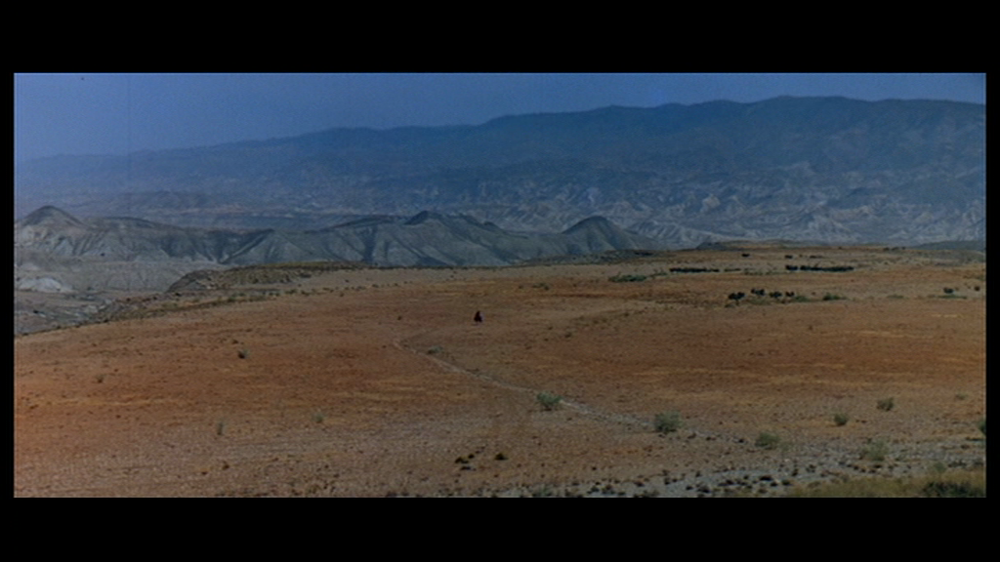

Study Lab
--- Software Engineering ---
Services |
News |
Engineering |
Resources |
Contact |
About |
Thoughts
We provide software engineering services.
Occasionally we also offer computer operating
(sysadmin, dba, devops) services and
consulting in software, software engineering
and applied Computer Science solutions.
The typical assignments are:
- code with effective documentation
- proof of concept software
- software architecture
- maintenance contract for any code we produced
- harnessing and combining open source tools
- back-end software operation
- evaluate the current software tool scenery that addresses an identified need
- assess the feasibility of a computer solution
- training and presentations on technical subjects or software tools
We can also communicate in French.
